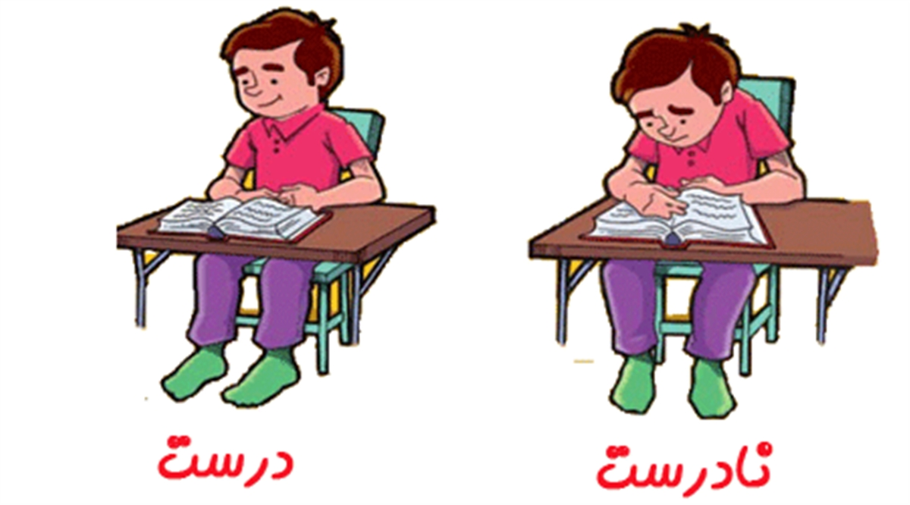

چگونه درس بخوانیم؟
اگرچه چگونگی درس خواندن شما ممکن است با افراد دیگر متفاوت باشد اما اصولی وجود دارد که با رعایت کردن آن ها همه میتوانند تا حد قابل توجهی مطالعه کردن و درس خواندن خود را بهبود ببخشند. در ادامه با این اصول آشنا خواهید شد.
خوابیدن در رخت خواب برای درس خواندن مناسب نیست، زیرا شما را خسته می کند و باعث می شود نتوانید مطالعه ی موثری داشته باشید. برای درس خواندن از یک میز و صندلی راحت استفاده کنید. همچنین بعضی وقت ها مدل نشستن ما طوریست که بدنمان را اذیت می کند و ذهن مان را مشغول می کند پس باید سعی کنید به بهترین نحو بروی صندلی بنشینید.
قبل از اینکه درس خواندن را شروع کنید برای آن برنامه ریزی کنید تا بتوانید به طور موثر مطالعه کنید. وقتی که برنامه ریزی کنید مغزتان شما را موظف می کند در ساعت مورد نظر مطالعه کنید. اکثر افرادی که از درس خواندن خسنه می شوند هیچ گاه برای آن برنامه ریزی نمی کنند.
یک راه برای لذت بردن از درس خواندن این است که از روش های خلاقانه استفاده کنید. برای مثال از سی دی های آموزشی استفاده کنید یا فایل صوتی درس هارا تهیه کرده و به آن ها گوش دهید.

اگر دروس طولانی برای مطالعه کردن دارید ولی وقتتان کم است بهتر است از نکات مهم آن خلاصه برداری کنید و یا دروس طولانی را به صورت نقشه ی ذهنی طراحی کنید تا بدون خستگی درس بخوانید.

اکثر دانش آموزانی که درس خواندن را دوست ندارند معمولا تجربیاتی از ساعات درس خواندن طولانی بدون وقفه دارند که از نتایج آن ناراضی اند. استراحت کردن فاکتوری مهم در مطالعه ی موثر است که نه تنها باعث جلوگیری از خستگی میشود بلکه باعث میشود مطالب خوانده شده بهتر در ذهن سازماندهی شوند. پس حتما یادتان باشد درساعات مطالعه خود استراحت های کوتاه ۱۵ دقیقه ای را جای دهید.
دانش آموزان برای درس خواندن بهتر به خصوص در ایام امتحانات بهتر است بیشتر از میوه ها، سبزیجات و آجیل ها استفاده کنند و مصرف غذا های فرآوری شده و فست فودها را کاهش دهند.
{برای مطالعه ی بیشتر در مورد این مبحث اینجا کلیک کنید}
یکی از روش های مهارت های تحلیلی و گفتاری خواندن و فکر کردن با صدای بلند است. و همینطور اگه ذهنتان موقع درس خواندن به موضوعات دیگری فکر میکنند بلند بلند درس خواندن است. با صدای بلند درس خواندن باعث می شود که مطالب را به زودی فراموش نکنید.